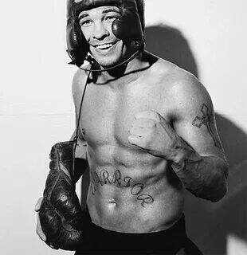

Артуро Гатти (итал. Arturo Gatti; 15 апреля 1972, Кассино, Италия — 11 июля 2009, Ипожука, Бразилия) — канадский боксёр-профессионал итальянского происхождения, выступавший во 2-й полулегкой, легкой, 1-й полусредней и полусредней весовых категориях. Чемпион мира в 1-й полулёгкой (версия IBF, 1995—1998) и 1-й полусредней (версия WBC, 2004—2005) весовых категориях. 4-кратный обладатель статуса «бой года» по версии журнала «Ринг»: 1997, 1998, 2002 и 2003. На любительском уровне принимал участие в молодёжном чемпионате мира в Перу в 1990 году, проиграв в первом же бою пуэрториканцу Хильберто Отеро (22:22+). Статистика ударов того боя — 119:122. Входил в состав национальной сборной Канады для отбора на Олимпиаду 1992 года, однако в 1991 году отказался от продолжения любительской карьеры.
